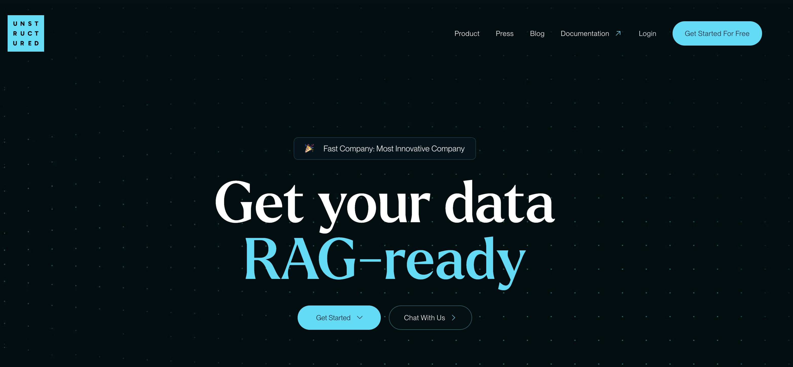

Tokenization

- Language models have a limit on how much text they can handle at once, known as their context window. While these limits are expanding, research shows that LLM's often perform better when provided with less, but more relevant, information. However, selecting the most relevant information is straightforward for humans but challenging for computers.
A common approach to manage large amounts of data is to break it down into smaller, more manageable parts a process often referred to as Tokenization or Chunking. Tokenization is a key step in this process, where raw text is divided into smaller units, called tokens, which can then be processed by a neural network.

In order to do this you need to pick a chunk strategy. Just to name a few:
-
Word-Based: A simple and straightforward method that most of us would propose is to use word-based tokens, splitting the text by spaces.
-
Character based tokenization: Individual words are considered as tokens . Lot of computing resources needed as now e.g for a 3 word serentence where you might need 3 tokens now 15 – 20 tokens needed
-
Sentence Based: We need a .(fullstop) for it to work
Note: We've all heard of GPT and OpenAI. They utilize a tokenization method called Byte Pair Encoding (BPE), which is a middle ground between word-based and character-based tokenization. In BPE, words are broken down into smaller character sequences that the model encountered during training, allowing it to make informed predictions.
Why we need Tokenization or Text Splitting?

Historically, applications perform better when they are provided with your own data. However, you can't feed unlimited data to your LLMs due to two key limitations:
-
Context window limit: LLMs have a finite context window for processing data.
-
Signal-to-noise ratio (SNR): LLMs perform better when the SNR is high, meaning the information provided is useful, relevant, and clear. Clear, unambiguous instructions help the model deliver more accurate and detailed results, while ambiguous or complex input can lead to less accurate or incomplete outputs.
As noted, chunking or splitting refers to breaking your data into smaller, manageable pieces.
Task 1: Log into the Lab Environment
- Open Google Colab and create a new notebook. Click on "File" > "New notebook". Please refer to the following section to create Google Colab account.

- Make sure you are connected to a runtime. For this task, you can use the CPU as the runtime environment.

Reminder: Whenever you want to copy the code in Google Colab and run it, be sure to click on + Code to add a new code cell.

Reminder: Click the play button to the left of the code, or use the keyboard shortcut "Command/Ctrl+Enter" while the cell is selected.

Manual testing for Chunking
We will create Chunks of 35 charectors, so first 35 charectors as chunk 1 , next 35 charectors chunk2 and so on
1 2 3 4 5 6 7 8 9 10 11 12 13 14 15 | |

Note: The text contained a total of 422 characters, divided into 13 chunks. Problem with the above chunking technique is that it got split at 'r'. How we know when to chunk . Before we look into that. Lets look into Langchain Splitter
LangChain Text Splitter
- Let's retrieve the langchain library from the Python Package. In the example below, we'll configure the chunk_overlap parameter, which ensures that our chunks are blended together—meaning the end of chunk 1 will overlap with the beginning of chunk 2.
1 | |
1 2 | |
1 2 3 4 5 6 7 | |
Recursive Charector Text Splitting
In the previous example, when we used Character Splitting, we split the text based on a fixed number of characters. Specifically, we divided the text into chunks of 35 characters each.
However, with Recursive Text Splitting (RTS), the process is more dynamic and considers the physical structure of the text to determine the appropriate chunk size.
Here’s how RTS works:
-
Instead of relying on a static number of characters, RTS examines the structure of the document.
-
It begins by identifying the largest logical divisions, such as paragraphs, and splits the text at each double newline (indicating paragraph breaks).
-
If any of these chunks are still too large, RTS will then move to the next level of separation, which is single newlines (often indicating sentences or list items).
-
If necessary, it will continue to break down the text further, using spaces and eventually individual characters as separators.
With RTS, you don’t need to manually specify the chunk size by character count. You simply pass your text to the RTS process, and it will intelligently determine how to split the text based on its structure, resulting in chunks that are logically organized and more contextually meaningful.

1 2 | |
1 2 3 4 5 6 | |

Note:If you're new to AI, I would personally recommend starting with Recursive Text Splitting (RTS).
Document Level Splitting
So far, we've been working with splitting regular documents. But what if we have markdown files or PDF or Python documentation? There's a better way to handle those cases, and that's where specialized document splitting comes into play.
PDF with table
PDFs often contain tables and other structured data that can be challenging to split accurately using character-based methods. For PDFs, it's important to extract and chunk all elements, including tables, effectively. We'll accomplish this using the Unstructured library, which is specifically designed for handling such tasks. If you have a large collection of PDFs, Unstructured is an excellent tool to manage them efficiently.

- Install relevant libraries for Unstructured
1 | |

1 | |

-
Let's load our PDF files into Google Colab. For this example, we can use the Cisco Financial Results. Please Download the file here as we will be using in the next step.
-
Within Google Colab, Click on Folder and create a new folder called "data"

- Click on [...], select Upload

- Choose your CiscoReport.pdf file and click Open
- We'll use the following code from the Unstructured library to demonstrate how tables can be extracted
1 2 3 4 5 6 7 8 9 10 11 12 13 14 15 16 17 18 | |
- Lets grab element 37 as its the one where our table is
1 | |
'<table><thead><tr><th>Revenue</th><th>$8.51 - $8.53 Billion</th><th>$34.5 - $34.7 Billion</th></tr></thead><tbody><tr><td>Y/Y Growth</td><td>~10%</td><td>~10%</td></tr><tr><td>FX Impact)</td><td>no impact</td><td>no impact</td></tr><tr><td>GAAP Operating Margin</td><td></td><td>~11.4%</td></tr><tr><td>Non-GAAP Operating Margin’)</td><td></td><td>~28.0%</td></tr><tr><td>GAAP Earnings per Share?)</td><td>$0.79 - $0.80</td><td>$2.67 - $2.69</td></tr><tr><td>Non-GAAP Earnings per Share()</td><td>$1.89 - $1.90</td><td>$7.41 - $7.43</td></tr><tr><td>Operating Cash Flow Growth (Y/Y)°)</td><td></td><td>16% - 17%</td></tr><tr><td>Current Remaining Performance Obligation Growth (Y/Y)</td><td>~10%</td><td></td></tr></tbody></table>'
- Tables are straightforward for humans to read, but they aren't as easy for language models to interpret. Language models are typically trained on HTML tables, so when you pass HTML-formatted tables to an LLM, it will better understand the structure and content. You can paste the HTML into an HTML viewer to see how it looks.

Note: That's how you handle tables within a PDF.